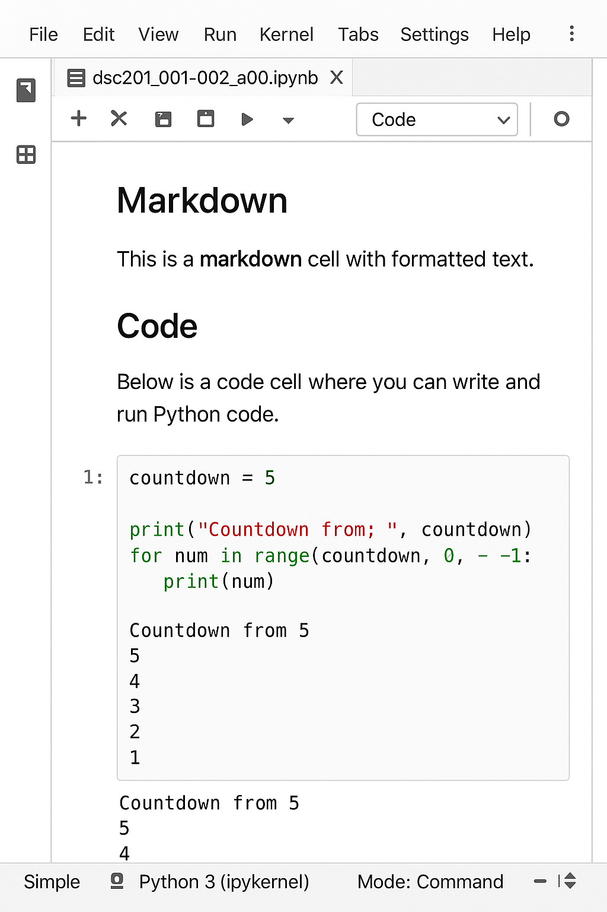

| Data Type | Description |
|---|---|
| Integer (int) | Represents whole numbers, e.g., 10 or -5. |
| Float (float) | Represents decimal numbers, e.g., 3.14 or -10.5. |
| String (str) | Represents sequences of characters or text, e.g., 'Hello' or 'Bien, y tu' |
| Boolean (bool) | Represents logical values, True or False. |
5 Python - the Basics
Now that we’re oriented with R and even have some data moves in our pocket, let’s turn towards the most popular programming language for data science (right above R), python. With learning both Python and R, you will be able to leverage the best of both languages to your data science advantage!
Note
##Tools for contemporary issues
As we noted in the introduction, R and Python are two of the most commonly used and preferred data science programming languages. Both languages have accessible tools and capabilities that meet the needs of data science, its evolution, and its role in exploring contemporary issues and specifying exciting discoveries. These include packages for exploratory data analysis, machine learning, visualization, and more. And, of course, the methods we emphasize allow for transparency and reproducibility, as components of a larger data science workflow and ethical framework.
What contemporary issues excite you about data science, and what exciting discoveries do you hope to make?
Before we begin our python journey, let’s consider some platforms that will allow us to utilize the python language interactively. Jupyter Notebooks
A Jupyter Notebook is a web-based interactive computing platform that supports programming in Python, R, and other languages. Jupyter notebooks allow users to create and share documents that combine code, equations, visualizations, and formatted text. Similarly to RMarkdown and Quarto in RStudio, Jupyter notebooks provide a unified work space where both code and its output can be displayed within the same document.
The image below is an example of a Jupyter Notebook.

As shown in the image above, Jupyter notebooks can have a combination of markdown cells, code cells, and associated output. Jupyter notebooks have a menu and a toolbar, which provide options for managing the document, switching between code and markdown cells, and running code cells.
5.1 Options for your Jupyter notebook workspace
A JupyterLab is an interactive development environment for working with Jupyter notebooks. Having access to a JupyterLab eliminates the need to download, install, and configure Jupyter notebooks on your device. Options for working with Jupyter notebooks outside of a JupyterLab include Anaconda, Visual Studio Code, and other platforms, such as cloud-based Google Colab. Consider your access needs and choose the platform that works best for you!
5.2 Let’s talk about Python
Python is a general-purpose programming language, created by Guido van Rossum, first released in 1991. It was designed to have a straightforward, readable syntax for ease of understanding and coding. Currently, python is used across various fields, including web development, data science, and artificial intelligence.
5.4 Python Data Types
Python provides a variety of built-in data types and data structures. We will emphasize the datatypes that are most common, essential for beginners, and that arise in exploratory data analysis settings.
These core data types include:
Python is also an object-oriented programming language meaning almost everything that you interact with is an object. Basic data types, like a number (e.g., 10) or a string (e.g., “Kon’nichiwa sekai”) are objects that come with built-in capabilities. For example, numbers support arithmetic operations, while strings allow for actions like concatenation used for combining strings together.
Many objects in Python, like numbers and strings, are instances of built-in classes. A class is essentially a template that defines the structure and behavior of objects. It specifies what attributes, or properties, the objects will have and what methods, or actions, they can perform. The int data type is an example of such a class. It has attributes, such as an associated value (e.g., 10), and methods or actions that can be invoked, like addition (e.g., 10 + 5 returns 15).
5.4.1 Determining a variable type
To determine the particular type (or class) of a variable in Python, we can use the aptly named type() function. We can easily imagine uploading a dataset, perhaps with limited data dictionary information, and having the need to understand or verify variable types.
Let’s look at a few examples below to explore default associations for different forms of data we might encounter.
# Exploring the class of a counting number, like 10
type(10)<class 'int'>Now we see that python returns the class int for the number 10. Let’s explore the types of a few other examples of common data points.
# decimal
type(3.14159)<class 'float'># a phrase
type("Kon'nichiwa sekai")<class 'str'># a logical value
type(True)<class 'bool'>The output lists the corresponding classes in the order in which the code was executed, from top to bottom. Note that the bool (logical) value True is case sensitive, where the first letter is capitalized.
5.4.2 Objects & Operators
As noted above, certain classes have certain operators with which they can interact. However, the same operator can perform different actions in different contexts. In this case, the context would be the variable types to which the operator is applied. To understand the multi-functionality of certain operators let’s observe the examples in the following two blocks of code.
# Let's apply `+` to two numbers (`int` + `float`)
10 + 3.1415913.14159As we might expect, applying the + operator to two numbers results in their addition. But, what if the values are non-numeric - will this produce an error?
# Let's apply `+` to words
"in a day," + " or twoooo"'in a day, or twoooo'Aha! The + operators also works on the class str (e.g., phrases) and results in concatenation.
Know your object
An important takeaway is that understanding the characteristics of objects and the associated methods is essential to the programming process.
Notice, in the code above, we added a space to the concatenation by making this space a part of the second string.
5.4.3 Additional arithmetic operators in Python
| Operator | Description | Example | Result |
|---|---|---|---|
| `+` | Addition | 5 + 3 | 8 |
| `-` | Subtraction | 5 - 3 | 2 |
| `*` | Multiplication | 5 * 3 | 15 |
| `/` | Division | 5 / 3 | 1.6667 |
| `%` | Modulus (remainder) | 5 % 3 | 2 |
| `**` | Exponentiation (power) | 5 ** 3 | 125 |
5.5 Variables - revisited
With respect to the programming context, in Python a variable is a named reference to an object. Variables can be thought of as labels associated with stored data. These labels can be referenced in your program for viewing or for the purposes of accomplishing other data processing tasks. Just as in R, variables in Python can contain anything from a single value to a complete dataset, or even more.
Variable names in Python can only include lower and upper case letters, digits from 0-9, and underscores (_). Although digits are allowed within a variable name, the names cannot begin with a digit. Variable names also cannot contain a space or be a reserved word - a word that has a predefined meaning and specific purpose within Python - like True.
Recall that we strive for clarity and reproducibility in our data science programming processes. So, despite the flexibility we may have with naming a particular object, or variable, it is a good practice to use descriptive variable names when appropriate. Following this practice can improve the readability and comprehension of your program, which are important in general and particularly in collaboration.
# what did these numbers mean again?
x = "201"
y = "001"
z = 1Above, we used perhaps convenient, but absolutely uninformative, variable names for three different numbers (although of different types). However, it wouldn’t take much longer to think of informative variable names, as in the code below.
# course information
course_code = "201"
course_section = "001"
CreditHours = 1In addition, a little time upfront can save a lot of time in the long run. For example, if you revisit this code later on, you likely won’t have to wonder what the variable course_code contains, as where you might have to investigate or memorize the contents of a variable labeled x.
As you know, informative code comments are great and also essential to our processes. Keep in mind, though, that informative comments alone are not as useful as informative comments and descriptive variable names!
Variable name conventions
As you develop your programming style, and think about future data science collaborations, you may even want to consider a process for naming conventions. Common naming conventions like camelCase, PascalCase, and snake_case are useful choices that can be made to be descriptive and are acceptable across various programming languages, including R and Python (1).
In this chapter, we will follow the naming conventions outlined in PEP 8 (Python Enhancement Proposal 8), which is the official style guide for Python code. For this, snake_case will be used for variables and user-defined functions, and all caps with underscores (ALL_CAPS) will be used for constants.
5.6 Assignment statements - revisited
In R, it is typical to use the <- operator for assignment statements. For assignment statements in Python the = operator is used in all cases for assigning values to variables.
# assignment statement in Python are made with "="
# assign 5 to the variable radius
radius = 5
# let's create a variable "diameter" using "radius"
diameter = 2 * radius
# call diameter to display it's contents
diameter10Above we used the assignment operator = to create the variable radius and then used an expression to create a new variable called diameter. We can call our variables simply by referencing them as in the output above that is the result of running the line of code with diameter.
5.7 Data structures in Python
Python has built-in data structures to store collections of data. These data structures include:
| Data.Structure | Description |
|---|---|
| List (`list`) | An ordered collection that can store different data types, where elements can be added, modified, or removed. Example: [1, "two", 3.14, False]. |
| Tuple (`tuple`) | Similar to a list, but once created, its elements cannot be changed. Example: (1, "two", 3.14, False). |
| Dictionary (`dict`) | An unordered collection of key-value pairs where each key must be unique and values are accessed using their keys. Example: {"name": "Dana", "age": 50}, where the key-value pairs are "name" (key) and "Dana" (value) and "age" (key) and "50" (value). |
5.7.1 Lists
A list in Python is an ordered collection of items that may be of different types of data, such as numbers, strings, or even other lists. Lists are mutable, meaning you can add, modify, or remove their elements. Each element in a list is stored in a specific position called an index.
Note
In Python the list indices begin at 0! This means that the first element in a list is represented by the 0 index position. The second element in a list is represented by the 1 index positions, and so on. This is a marked difference from indexing in R.
Below, the list [1, "two", 3.14, False] contains four elements: an integer (1), a string ("two"), a float (3.14), and a Boolean (False). In this case, the first element (1) is represented by the zeroth position (or the 0 index number), the second element ("two") is represented by the first position (or 1 index number), and so on. In general, the indices increase by 1 for each subsequent element of a list.
In the code below, as assignment statement is used to assign the list [1, "two", 3.14, False] to the variable example_list.
# Create a list of the elements 1, "two", 3.14, False
example_list = [1, "two", 3.14, False]
# Display the contents of example_list
example_list[1, 'two', 3.14, False]We can access a specific element of example_list by denoting its index position inside of brackets (i.e., using bracket notation). Below we get the first element of example_list by referencing the zeroth index position.
# Access the first element of example_list (in the zeroth index position)
example_list[0]1To view each element in the list individually, we can specify the relevant indices within the list, via bracket notation, as inputs to the print() function.
print(example_list[0])1print(example_list[1])twoprint(example_list[2])3.14print(example_list[3])FalseCan we view list elements in sequence without having to type out each one? Of course! One way to do this is to use the slice syntax denoted by a colon :. For example, example_list[1:3], extracts the elements starting from index 1 up to, but not including, index 3.
# Access elements starting from index 1 up to, but not including, index 3.
example_list[1:3]['two', 3.14]A slice will return a list even if it is a single element.
# Access elements starting from index 2 up to, but not including, index 3.
example_list[2:3][3.14]Take a moment to consider how you would get the first through third elements of example_list (or a general list).
5.7.1.1 Common list methods
In data science, Python lists are often used to store, organize, and manipulate data using built-in list methods. A method is a function that is associated with an object type and is used to perform actions or operations on that object. Methods in Python are called using a specific syntax known as dot notation. In dot notation, the format is object.method(arguments). The method comes after the dot and tells Python what action to perform on the object that precedes it.
While there is a comprehensive list of methods available for lists, we will focus on those most commonly used. In particular, this section will cover methods used for adding, removing, and rearranging elements within a list.
5.7.1.1.1 .append()
The .append() method adds a single element to the end of a list. The element can be of any data type such as a number, string, or even another list. This operation is done in place, meaning it modifies the original list directly and does not require an additional assignment statement.
# Create a list of the elements 1, "two", 3.14, False
example_list = [1, "two", 3.14, False]
# Add the element 5 to example_list
example_list.append(5)
# Display the contents of example_list
example_list[1, 'two', 3.14, False, 5]5.7.1.2 .remove()
The .remove() method removes only the first occurrence of a specified element from a list, even if the element appears multiple times. Like .append(), the .remove() method performs the operation in place.
# Create a list of the elements 1, "two", 3.14, False
example_list = [1, "two", 3.14, False]
# Remove the element 'two' in example_list
example_list.remove("two")
# Display the contents of example_list
example_list[1, 3.14, False]The code below illustrates how only the first object of a repeating list element is removed using .remove().
# A list with "two times" repeated
repeat2x_list = [1, "two times", "two times", 3]
# Display the contents of repeat2x_list
repeat2x_list[1, 'two times', 'two times', 3]# Remove the element 'two times' in repeat2x_list
repeat2x_list.remove("two times")
# Display the contents of repeat2x_list after .remove()
repeat2x_list[1, 'two times', 3]5.7.1.3 .sort()
The .sort() method arranges the elements of a list. Ascending order is the default arrangement. However, unlike the two prior methods, the .sort() method only works on homogeneous lists. This means that all elements in the list must be of the same data type (e.g., all integers or all strings).
To sort a list in descending order, you can use the reverse=True argument within the .sort() method. This will reverse the default sorting behavior, placing the largest elements first.
# A list containing the elements "elephant", "zebra", "tiger", "panda"
animals = ["elephant", "zebra", "tiger", "panda"]
# Sort in ascending order
animals.sort()
# Display the contents
animals['elephant', 'panda', 'tiger', 'zebra']# A list containing the elements "mango", "apple", "cherry", "banana"
fruits = ["mango", "apple", "cherry", "banana"]
# Sort in ascending order
fruits.sort(reverse = True)
# Display the contents
fruits['mango', 'cherry', 'banana', 'apple']5.7.2 Tuple
In Python, a tuple is an ordered collection of items that can be of different data types, such as numbers, strings, or even other tuples. Like lists, each element in a tuple is assigned an index, starting at 0 for the first element, 1 for the second, and so on, incrementing by 1 for each subsequent element.
Below, we use an assignment statement to assign the tuple (1, “two”, 3.14, False) to the variable example_tuple.
# Create a tuple of the elements 1, "two", 3.14, False
example_tuple = (1, "two", 3.14, False)
# Display the content of example_tuple
example_tuple(1, 'two', 3.14, False)So is there a difference between lists and tuples? Well, yes…
The main difference between a list and a tuple is that lists are mutable (you can change their elements), while tuples are immutable (their elements cannot be changed once created).
5.7.3 Dictionary
A dictionary in Python is an unordered collection of key-value pairs that can store items of different data types, such as numbers, strings, lists, tuples, or even other dictionaries. Unlike lists or tuples, a dictionary does not use numeric index values. Instead, each element (or value) of a dictionary is accessed using its corresponding, unique key. In addition to being unique, dictionary keys must be immutable data types meaning they cannot be changed after being created. For example, keys can be numbers, strings, or tuples!
Tuples as dictionary keys
Even though tuples themselves are immutable, they can still contain mutable objects like lists. However, to use a tuple as a key in a dictionary, everything inside the tuple must also be immutable. For example, a tuple that contains a list cannot be used as a dictionary key, because lists can change: But, dictionary keys must stay the same.
For example, the dictionary {1 : "Turtle Power", "id" : "Leonardo", 2 : "pizza", "total" : 4, "leader" : True} contains five key-value pairs: a number key 1 with a value of "Turtle Power", a string key "id" with a value of "Leonardo", a number key 2 with a string value of "pizza", a string key "total" with a number value of 4, and a string key "leader" with a Boolean value of True. Each key is a unique identifier for its corresponding value.
Below, we use an assignment statement to assign the dictionary {1 : "Turtle Power", "id" : "Leonardo", 2 : "pizza", "total" : 4, "leader" : True} to the variable tmnt_dict.
# A dictionary with key-value pairs
# 1-"Turtle Power", "id"-"Leonardo", 2-"pizza", "total"-4, "leader"-True
tmnt_dictionary = {1 : "Turtle Power", "id" : "Leonardo", 2 : "pizza", "total" : 4, "leader" : True}
# Display the contents
tmnt_dictionary{1: 'Turtle Power', 'id': 'Leonardo', 2: 'pizza', 'total': 4, 'leader': True}Since dictionaries are not ordered the values cannot be accessed using indices. Instead, to access the values in a dictionary we need to use key names with bracket notation. For instance, the expression tmnt_dictionary[“id”] can be used to retrieve the value associated with the key ”id”.
Below, we use the print() function, our dictionary reference and the keys in bracket notation to view each of the values.
print(tmnt_dictionary[1])Turtle Powerprint(tmnt_dictionary["id"])Leonardoprint(tmnt_dictionary[2])pizzaprint(tmnt_dictionary["total"])4print(tmnt_dictionary["leader"])TrueSince a dictionary is a mutable data structure, we can add new key-value pairs using notation that is similar to how we access values. For example, the assignment statement tmnt_dictionary[(“Type”, “id2”)] = [“Nunchucks”, “Michelangelo”] adds the key-value pair (“Type”, “id2”)-[“Nunchucks”, “Michelangelo”] to tmnt_dictionary, where the key (“Type”, “id2”) is a tuple and the value [“Nunchucks”, “Michelangelo”] is a list.
# Add the key-value pair ("Type", "id2")-["Nunchucks", "Michelangelo"] to tmnt_dictionary
tmnt_dictionary[("Type", "id2")] = ["Nunchucks", "Michelangelo"]
# Display tmnt_dictionary
tmnt_dictionary{1: 'Turtle Power', 'id': 'Leonardo', 2: 'pizza', 'total': 4, 'leader': True, ('Type', 'id2'): ['Nunchucks', 'Michelangelo']}5.7.4 Common dictionary methods
Dictionaries are often used in data science to store and organize data. To facilitate the use of dictionaries, Python has a set of methods that can be used to perform actions on these data structures. Next, we’ll look at a few methods used that can be used to add and access key-value pairs within a list.
5.7.4.1 .items()
The .items() method is used to retrieve all key-value pairs in a dictionary. It returns a read-only view of the dictionary data called dict_items. In Python, dict_items is a special type of object that shows all the key-value pairs in a dictionary as a collection of tuples. Each tuple contains one key and its corresponding value.
# A dictionary with key-value pairs
tmnt_dictionary = {1: 'Turtle Power', 'id': 'Leonardo', 2: 'pizza', 'total': 4, 'leader': True, ('Type', 'id2'): ['Nunchucks', 'Michelangelo']}
# Display the key-value pairs as tuples using .items()
tmnt_dictionary.items()dict_items([(1, 'Turtle Power'), ('id', 'Leonardo'), (2, 'pizza'), ('total', 4), ('leader', True), (('Type', 'id2'), ['Nunchucks', 'Michelangelo'])])5.7.4.2 .keys()
The .keys() method can be used to retrieve all the keys in a dictionary as a dict_items object.
# display the keys of tmnt_dictionary
tmnt_dictionary.keys()dict_keys([1, 'id', 2, 'total', 'leader', ('Type', 'id2')])5.7.4.3 .values()
You likely can guess what the .values() method returns. If you were thinking that this method will return all of the values in a dictionary as a dict_items object, you’d be right!
# display the values of tmnt_dictionary
tmnt_dictionary.values()dict_values(['Turtle Power', 'Leonardo', 'pizza', 4, True, ['Nunchucks', 'Michelangelo']])Within a data science workflow, lists, tuples, and dictionaries can serve different purposes and meet different needs. In this way, each of these Python data structures are useful and important. For comparisons, lists are often better for storing and modifying collections of data as where tuples may be preferred for fixed data like names or IDs. Dictionaries would likely be preferable for organizing data that needs to be accessed using reference labels or keys.
5.8 Python libraries
A library in Python is similar to a package in R. A Python library is a collection of pre-written code that provides functions, classes, and modules to perform tasks like data manipulation, analysis, and visualization. Python offers several libraries that are commonly used in data science.
5.8.1 NumPy
NumPy (Numerical Python) is a library that facilitates numerical data processing. This library includes specialized data structures, such as multidimensional arrays, that allow for vectorized operations. Recall that vectorization allows for element-wise computations without the need for loops. NumPy also has built-in functions for fast and efficient mathematical and statistical calculations.
Before we can use NumPy features, we have to first import the library into a script or Jupyter Notebook. We can do this for a general Python library by using the import command followed by the library name. Some libraries, like NumPy, are commonly imported with an alias to simplify the code syntax when accessing features of the library. For example, import numpy as np allows you to use np as a shorthand when calling NumPy functions.
## Import the numpy library with the alias np
import numpy as npThe standard convention for calling NumPy functions is to prefix them with np.
# Store the mean of the list into ex_calc
ex_calc = np.mean([1, 2, 3, 4, 5])
# display the value of ex_calc using print()
print(ex_calc)3.0NumPy functions, like np.mean(), are primarily designed to work with NumPy arrays. However, many of them also accept Python lists as input because NumPy automatically converts lists into arrays internally. This was the case in the code above since [1,2,3,4,5] is a list. Although this conversion worked in this case, using arrays directly is better to ensure proper compatibility and performance.
5.8.2 pandas
R includes many data analysis features in its base version. This is not the case for base Python. So, in Python, we need to leverage libraries like pandas to get the specialized functions and tools we need for our data science tasks. So what is pandas?
pandas is a Python library used for data analysis and data processing. It provides data structures like Series and DataFrames, which can be used to store, organize, manipulate, and analyze data. pandas provides tools to facilitate data cleaning, data moves, like filtering & merging, data visualization and more.
As we did with NumPy, we can import pandas with the import statement and create an alias for it.
## Import the pandas library with the alias pd
import pandas as pdAfter importing the pandas library, we gain access to data structures and tools essential for performing various data moves.
5.8.2.1 Series and DataFrames
The main data structures that we will use are the Series and the DataFrame.
A Series is a 1-dimensional labeled array that is similar to a vector in R. Each element has the same data type and is associated with an index, which serves as the label for accessing the data.
A DataFrame in pandas is a 2-dimensional labeled data structure that organizes data in a tabular format (i.e., rows and columns). A DataFrame can contain multiple data types because each column is a Series with its own data type. Columns are labeled (typically by name), and rows are identified by an index. A DataFrame is like a spreadsheet, where each row represents an observational unit and each column represents a characteristic or feature of that observed unit.
5.8.2.2 Pandas Functions
Pandas provides a comprehensive set of attributes and functions that can be used to analyze and visualize data. Attributes are properties of pandas objects that provide information about the object. For example, an attribute can be used to get the dimensions of a DataFrame.
Functions (also called methods) perform operations on pandas objects. We might use a function to compute the mean of the values in a numerical Series, for example. By using pandas attributes and functions, we can perform data moves to facilitate analysis and prepare data for visualization!
5.3 Comments in Python
##Recall
Comments should be written as complete sentences and used to provide context or explain decisions that cannot be effectively communicated through other means like descriptive variable names or the structure of your code. Comments should clarify why specific coding choices were made, detail the processes used to implement those choices, and explain the underlying concepts or assumptions that support them.
At times, as seen in the code chunk below, it can be helpful to place comments directly above the code they reference. This can add clarity and context to the code that follows, and may be a more readable option when inline comments do not work as well.
Another use of comments, especially in the collaborative coding process, can be to provide guidance to help those you work with understand your project workflow. For example, comments can indicate when code updates are needed or can serve as a point of reference that specifies the next tasks that need to be completed.